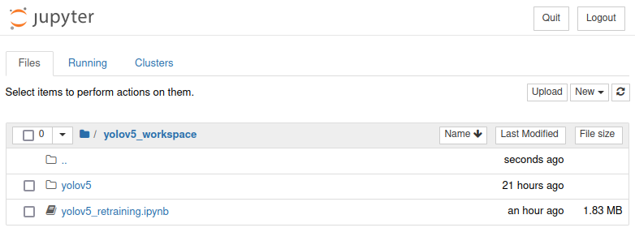
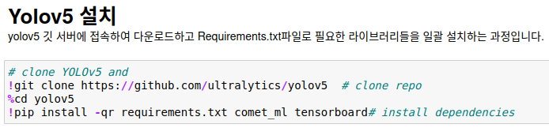
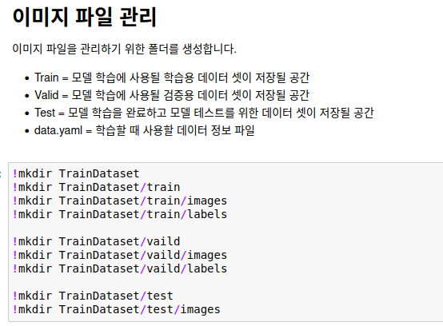
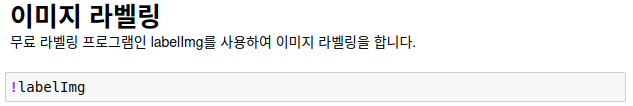
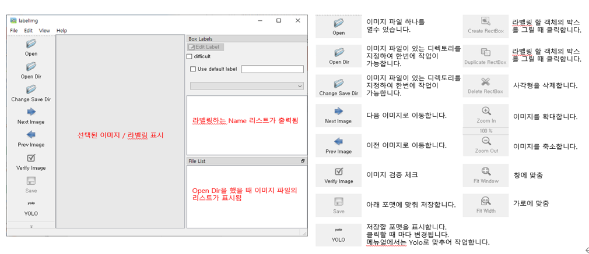
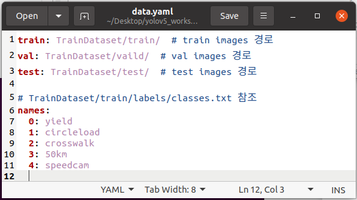
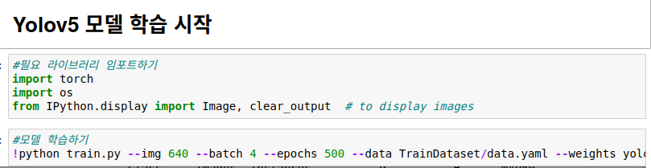
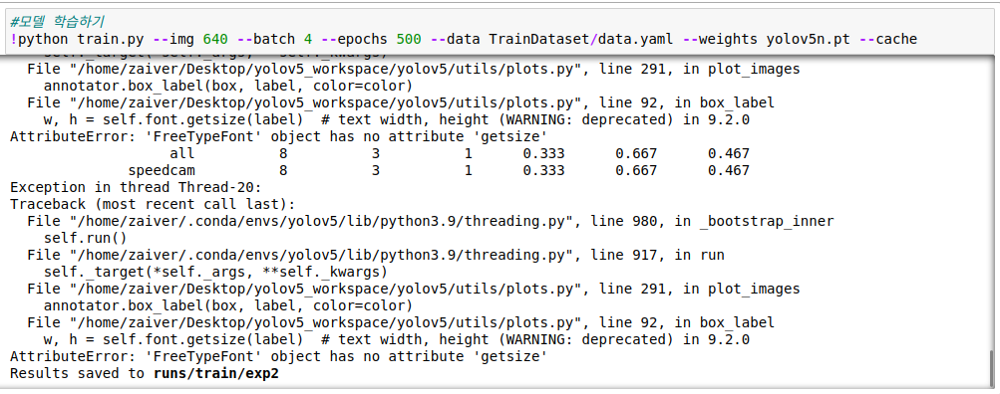
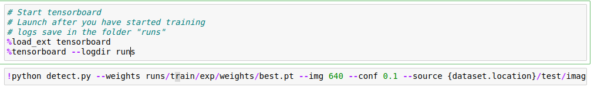
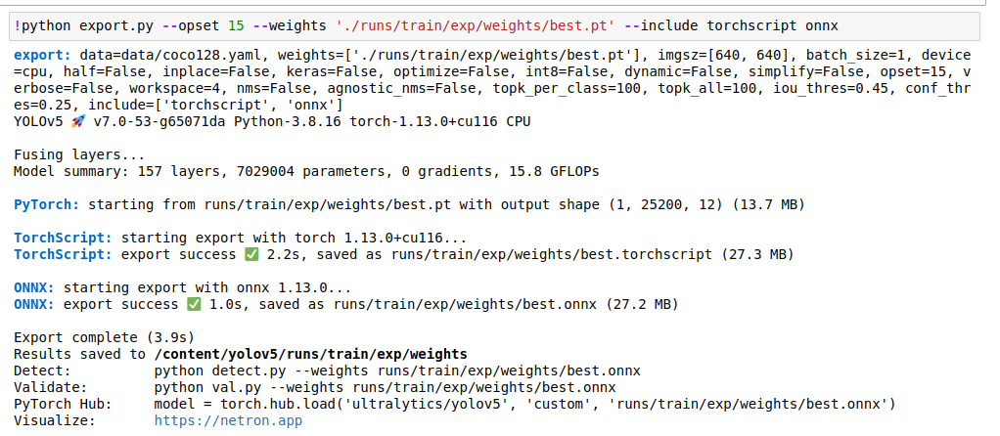

1. YoloV5 학습
1.1. Jupyter Notebook 실행
작업폴더로 이동
# 설치 시 생성한 폴더로 이동 cd ~/yolov5_workspace실행
Jupyter notebook실행결과

Notebook 파일 실행
yolov5_retraining.ipynb 파일을 더블클릭 하여 실행합니다.
파일을 열면 대부분 진행과정별로 설명되어 있으므로, 설명에 따라 진행하면 됩니다.
1.2. YoloV5 설치 및 학습
1.2.1. YoloV5 설치
설치

1.2.2. Image 파일 폴더 생성
이미지 저장 폴더 생성

1.2.3. 이미지 라벨링
라벨링 프로그램 실행
 
학습할 이미지 파일들을 이전에 생성한 TrainDataset/train/images 경로로 옮깁니다.
Open Dir 버튼을 눌러서 TrainDataset/train/images 경로로 지정하면 이미지들을 모두 열고,
Change Save Dir 버튼을 눌러서 TrainDataset/train/labels 경로로 지정합니다.
이미지를 열어 박스를 그리면 라벨이름을 지정하는 창이 출력되며 라벨이름은 저장되어 선택 리스트에 표시됩니다. - 라벨작업을 할 때 마다 저장합니다.
valid/test data 설정
라벨링이 종료되면 train 데이터의 10%정도를 vaild 폴더로 이동합니다.
TrainDataset/train/images 10% => TrainDataset/vaild/images TrainDataset/train/labels 10% => TrainDataset/vaild/labels TrainDataset/train/images 10% => TrainDataset/test/imagesData 설정
마지막으로 노트북 파일과 같이 옮겼던data.yaml 파일을 열어서 수정합니다.
각각의 데이터 셋 경로를 지정해주고
라벨링툴을 이용해서 생성된 classes.txt파일을 참조하여 순서대로 지정하면 됩니다.

1.2.4. 학습
학습 시작

Train.py 의 arguments
* img=이미지 사이즈 * batch=학습 이미지 단 * epochs=학습 반복 횟수 * data=데이터 셋 정보가 있는 yaml 파일 경로 * weights=가중치 파일 * cache=캐시메모리 사용 여부입니다.학습 결과
학습이 완료되면 runs/train/exp 경로에 Loss가 가장 적었던 best모델(best.pt)이 저장됩니다.

학습 결과 검증
Tensorboard를 이용하여 모델이 학습된 세부 내용들을 확인할 수 있고 detect.py를 이용하여 학습된 모델로 추론 결과를 테스트할 수 있습니다.

학습된 모델을 ONNX로 내보내기
Export.py를 이용해 onnx파일로 저장해주면 커스텀 데이터 셋으로 모델 학습이 완료되었습니다. Export된 onnx파일은 ZAiV Board에 맞게 컴파일 시 사용됩니다.
